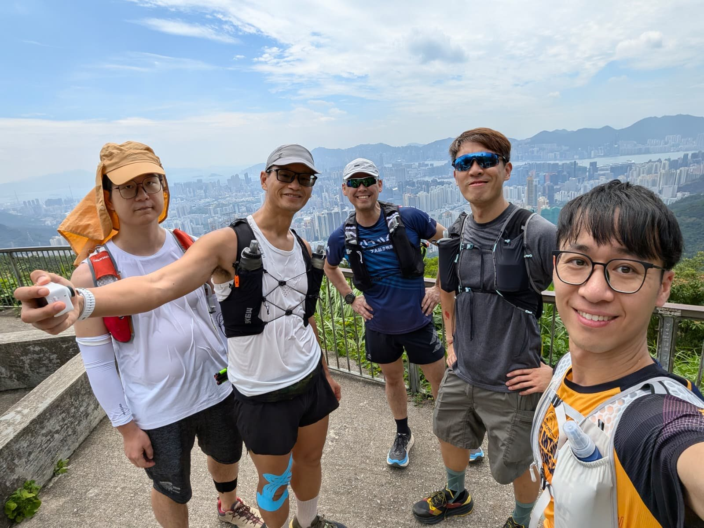
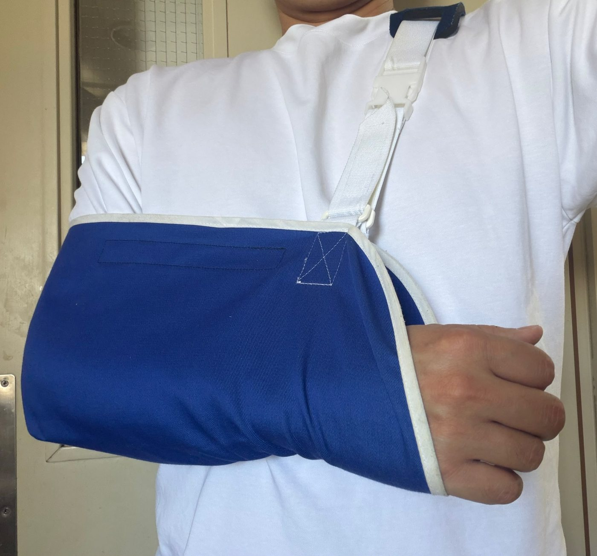
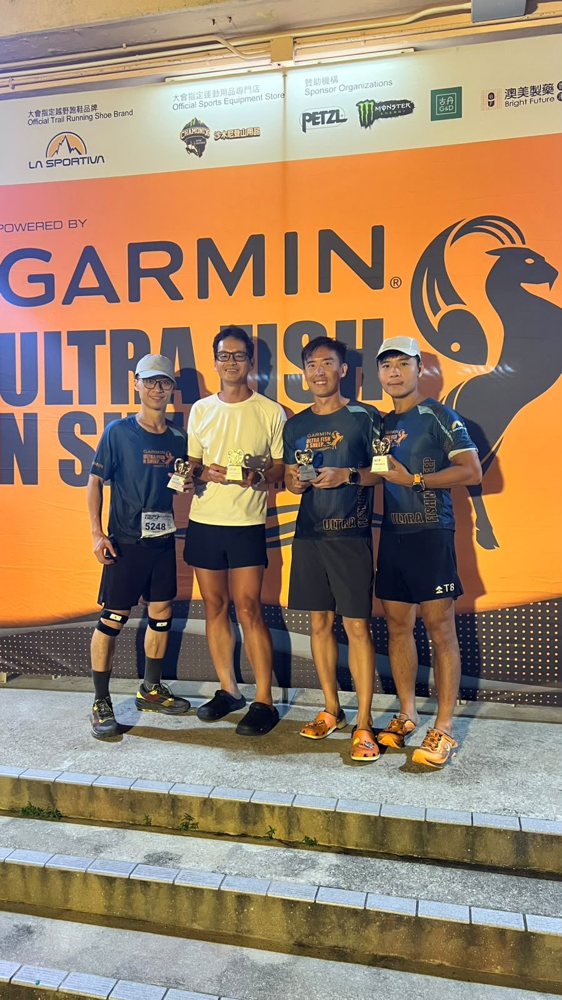
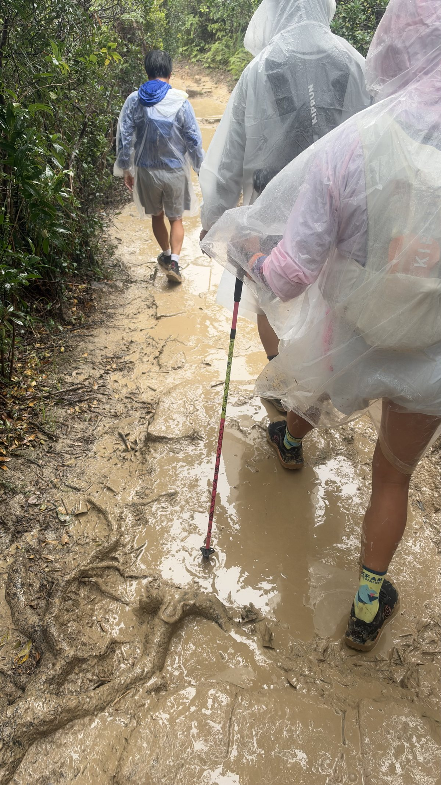
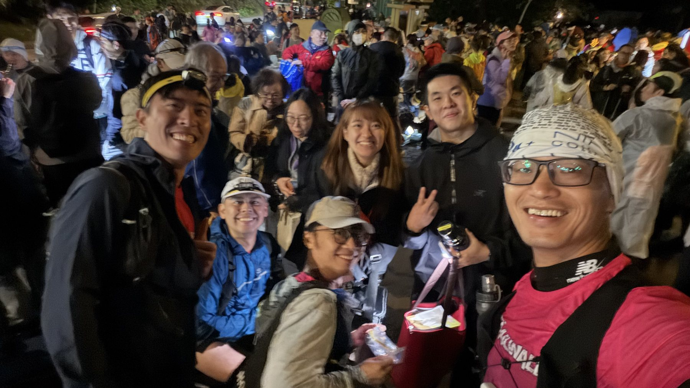
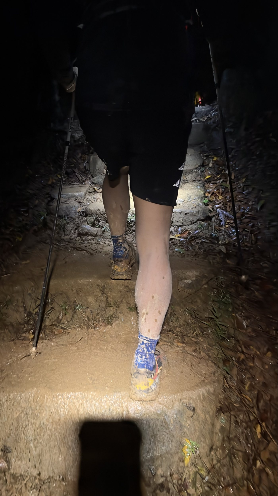
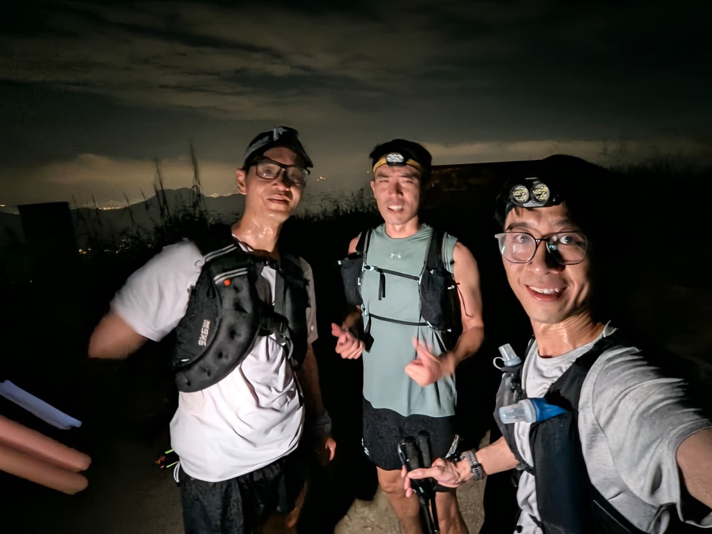
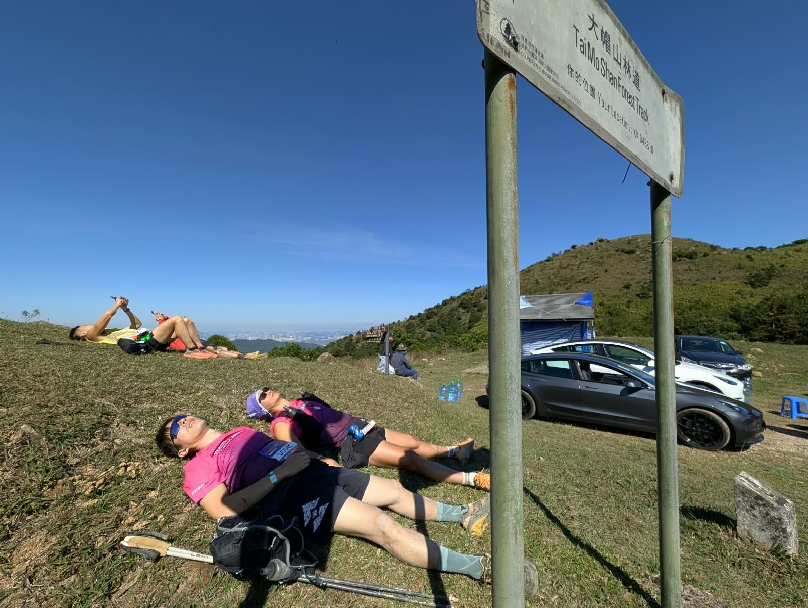
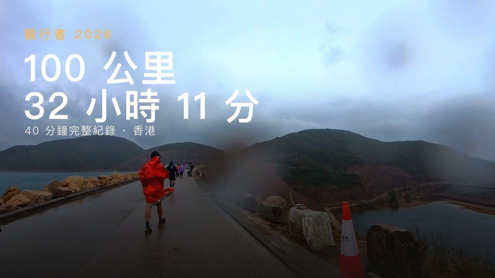

Chapter 01
一個念頭
2024 年，我們四個人開始籌備這件事。當時我們四個都算不上會跑步，一百公里對我們來說，只是一串聽起來很遠的數字。
一次聚會，有人提起：不如去行毅行者。我當時應承了。應承是多麼容易的事——一句話，一個點頭，連一秒都不用。
但到認真開始報名的時候，我退縮了。一百公里，真的不是一段短的距離。我在心裡問自己：我行得完嗎？如果行不完，怎麼辦？那種恐懼很具體，具體到你會寧願不去開始。
所以 2025 年，我沒有報名。

2026 年 11 月 20 日至 21 日。我們用了 32 小時 55 分，走完這一百公里。這頁，是寫給每一位捐款人的。
先要多謝以下每一位捐款人。因為你們的信任與支持，這次籌款活動才得以順利進行——每一筆捐款，都是我們在深夜山上繼續往前走的理由。 同時也多謝沿途的支援隊、贊助商與義工，你們的熱食與笑容，我們都記得。
2024 年，我們四個人開始籌備這件事。當時我們四個都算不上會跑步，一百公里對我們來說，只是一串聽起來很遠的數字。
一次聚會，有人提起：不如去行毅行者。我當時應承了。應承是多麼容易的事——一句話，一個點頭，連一秒都不用。
但到認真開始報名的時候，我退縮了。一百公里，真的不是一段短的距離。我在心裡問自己：我行得完嗎？如果行不完，怎麼辦？那種恐懼很具體，具體到你會寧願不去開始。
所以 2025 年，我沒有報名。

2025 年，因為宏福苑那場火災，活動最終沒有舉行。名額、訓練、計劃，全部停在原地。
我記得那段時間，我沒有特別鬆一口氣，也沒有特別失落。只是覺得，有些事情好像不是我們可以決定。
2026 年，活動再辦。隊員有人退出，空缺出現了。
那時候我已經準備了一段時間。不是為了填補誰的位置，而是我終於想試一次——想知道那個 2025 年不敢報名的自己，究竟可不可以。
所以我以後備隊員的身分正式加入，成為第四個人。然後，開始走這一百公里的第一步。

越野訓練的過程並不如想像中順利。隊長中途斷了手，一條手臂吊在胸前。連揹背囊都要人幫忙的時候，我們其實有想過：是不是又要延期？
我們原本安排了一場魚羊的模擬比賽，最後也去不成。
活動開始之前，時間已經不夠。四個人沒辦法再一起練習，只能各自練、各自報道，互相監督——你今天跑了沒有？你上個星期有沒有上山？
四個人，四條時間表。唯一相同的，是我們都在為同一日準備。



終於，我們四個人全部站在起跑線上面。
一踏上起跑線，另一個挑戰就來了。天氣突然轉壞，環境比我們想像、也比我們準備的都要惡劣。
而更狼狽的是，我們完全不知道原來沒有行李寄存。四個人要在起跑之前處理行李，中間支援點的安排也跟著混亂起來。原本計劃好的支援點在哪、誰拿什麼、幾點到——全部要重新想一次。
那一刻其實可以選擇不上路。但既然已經站在線上了，我們決定：先起跑，再一步一步打算。

起跑之後，天氣變得更差。雨水順著山徑流下來，泥土變成泥漿。
每一步都好滑，每一步都要想清楚放哪裡。我們走得很小心，但還是免不了要輕輕摔一跤——摔下去那一刻，整條褲都是泥。
有隊員開始失溫，不停打冷顫。我們用最簡單的方法保暖：加衣、慢跑，靠身體自己生熱。一邊慢跑保暖，一邊承受寒冷，一步一步走向第一個支援點。
到了支援點，簡單買了食物，讓身體暖起來，然後又出發。

一直到企嶺下，我們安排的支援隊出現了。
那一刻，情況才真正好轉。有溫暖的食物，有新鮮的食物，身體得到適當的照顧；也有保暖的設備，讓我們暫時恢復溫暖。
有人遞上一杯熱的東西。你才知道，自己原來凍得那麼厲害。

入夜之後，溫度再跌。當時聽說，這已經是香港今年最凍的一日。
又凍又攰，人很容易入睡。我們幾個都有一點昏昏迷迷，慢慢一個跟著一個走。其實有幾次，已經有些許失去意識；走著走著，身體會搖搖晃晃。
那一夜我記得很清楚，也很模糊。


「四個人，一個跟一個。
沒有人講話，
但沒有人停下來。」 11 月 20 日．深夜
太陽慢慢出來的時候，我們才開始清醒，覺得個人精神一點。
大會開始提供熱飲，很多無私的贊助商和支援商也送來較優質的食物。熱的東西落肚，人才重新屬於自己。

第二日的早上是溫暖的。但沒有人想到，下午的太陽會變得那麼猛烈——整個山，變成夏天。
我們在一日之間，經歷了極寒冷與極炎熱。前一夜還在打冷顫，第二日就要找蔭。
幸好中途有好好照顧身體，大家都沒有發燒。雖然都有一點感冒，但不算大礙，可以繼續前進。
去到中後段，肌肉已經開始不太支援得到。
隊長受了傷，輕微的痛楚開始出現，他只能慢慢移動。大家開始起水泡，速度越來越慢。
而同時，上去終點的心情越來越焦急。人越急，越疲倦。
「一百公里最難的部分，
不是上坡，
是你知道自己已經很慢，
但仍然要繼續。」
然後是全程最大的關口：大帽山。
那是一段看不到盡頭的斜路。上到山頂的時候，四個人躺在草地上，誰都不想說話。風很大，天很藍，我們剛剛把香港最高的山踩在腳下。
攻陷了。


由大帽山落到扶輪公園，另一隊支援隊出現了。
這隊人充滿活力，陪我們走了一段路。因為他們出現，我們疲倦的身軀和心情，多了一點歡樂，也多了一點力量。
原來有人在等你，路會短一點。

去到終點那一下，大家都好感動，也都不相信自己真的可以完成這一百公里。我想，那是整個過程最興奮的一刻。這一段路很難忘；而它終於行完了，身體終於可以放鬆。



影片看不到？在 YouTube 開啟
整個路程回顧起來，其實很艱難。出發之前看天氣，本應是晴天；但突然來了一個寒流，整個變化巨大。
也因為這個挑戰，這一百公里才更加難忘。
最後，再一次多謝各位籌款者、各位捐款者。因為你們，我們才可以順利完成。我們也希望透過這次活動，把這些捐款，送到更多有需要的人手上。